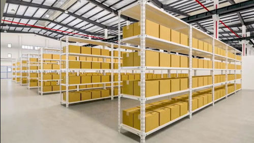

Overview of the Project
- Introduction(TODO)
- Design & Architecture(TODO)
- Step-by-step Build-up
- Results & Demonstrations(TODO)
- Future Improvements(TODO)
Introduction
This project is done for a good friend of mine, who is running a small business in Germany. The business is doing pretty well, but the warehouse management is still done manually. As the business is growing, the manual process is becoming more and more inefficient and error-prone. Therefore, I decided to help her to develop a lightweight but fully functional warehouse management system.
Design & Architecture
Requirements Analysis
The customer owns 2 small rooms in her own villa, each one as large as 40 m². Currently, all boxes are stacked on the floor, making it difficult to find and access items. The customer plans to organize the room by implementing a shelving system and a digital inventory management system.
The customer wishes to organize the room physically as a library, where each shelf contains a certain number of boxes in the same size, so that the separate spaces could be unified. Following is a good example of the physical organization. Though in our case, it would be smaller in scale.
The workflow of the warehouse management system can be divided into several key steps:
- Packages always arrive as a bundle. They would be kept inside the warehouse as storage units. The manager should of course have a clear overview of what items are inside the warehouse, and where they are located.
- From time to time, orders would come in form of a list. These should be collected into a parcel and sent out together.
- On expiring a certain period of time, each single item shall charge a storage fee daily, these should be summed up monthly and presented to the headquater.
Plan for the system
The warehouse management system should provide following functionalities:
- Inventory management: Keep track of all items in the warehouse, their quantities, and the corresponding storage box, and other relevant information.
- Receiving management: Handle the arrival of new packages and update the inventory accordingly.
- Order management: Process incoming orders, allocate items from the inventory FIFO.
- Storage fee calculation: Calculate the storage fees daily based on the duration of storage and item type.
- Warehouse Status: Status of each box, including its contents and location.
After discussion with the customer, the following workflows were defined:
Workflow for Receiving New Packages:
- Items arrive in packages, each of them has a unique identifier called UUID. The UUID, quantity shall be first fed into the system. (Through a Barcode Scanner/Keyboard)
- The system would return a list of all boxes that currently stores this item, and how many are still available in each box.
- The user would then decide which box to put the new items in, approach the box and scan the box's barcode. It is, however, here preferred to put newcomming items into a new box, so that the FIFO principle can be better maintained.
- The system would then prompt the user to give in the quantity of items to be added to this box.
- An automatically generated date, an automatically generated serial_ID, UUID, Delta Quantity, Box ID, user ID would be recorded in the system.
- Repeat step 3 through 5 until all items are stored or the storage is full.
- In case of full storage, the system would prompt the user to either remove existing items or allocate a new storage location, otherwise no Receiving would be allowed.
Workflow for Processing Orders:
- Orders are received in the form of a list of item UUIDs and quantities.
- The system prompts the user to scan a barcode containing UUID, and give in the quantity.
- The system returns a list of all boxes containing the requested item and their available quantities, ordered by incoming date. (FIFO? TODO)
- The user would then decide which box to fetch the items from, approach the box and scan the box's barcode.
- The system would then prompt the user to give in the quantity of items that are fetched from this box.
- An automatically generated date, an automatically generated serial_ID, UUID, Delta Quantity, Box ID, user ID would be recorded in the system.
- Repeat step 4 and 5 until all items are fetched or the storage is insufficient.
- In case of insufficient storage, the system would prompt the user to either cancel the order or adjust the quantity, otherwise no order processing would be allowed.
Extra functionalities:
- An extra list will list out the information of different items, unique to UUID.
- On scanning a new UUID, the system will prompt the user to enter the information of this item first before continuing workflow 'Receiving New Packages'.
- An extra list will show the current status of each box, including its contents and location.
- A monthly report will be generated automatically at the last day of the month, summarizing the storage fees for each item based on its type and duration of storage(how many expired days in this months).
Choosing Software and Hardware
Hardware list:- WLAN-Router with access to internet
- Barcode Scanner
- Tablet or Mobile Device for Inventory Management
- A Raspberry Pi as back-up UI
- Necessary Cables and Adapters
- Label Printer for Box Labels & Barcodes
- Google Sheets as database
- Google Script for Back-end automation
For now, we are only using Google Sheets and Google Script to manage our inventory. For future improvements, we may consider more advanced inventory management systems.
Step-by-step Build-up
- 2025-06-13: Designed the database schema in Google Sheets
- 2025-06-13: Decide on the hardware specifications and first-round procurement.
Results & Demonstrations
...
Future Improvements
...